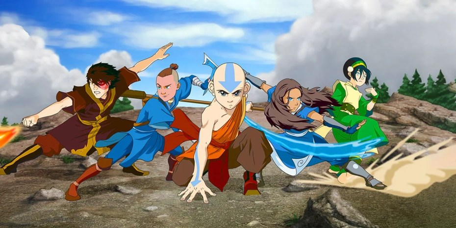

Public-Server
--Home---
bendersMC
 Introducing you with a minecraft server that provides you with four elemental powers in their server you can enjoy playing faction and survival.
IP : play.bendersMC.co
port: 19132 (default)
Quote Of The Day
Generate